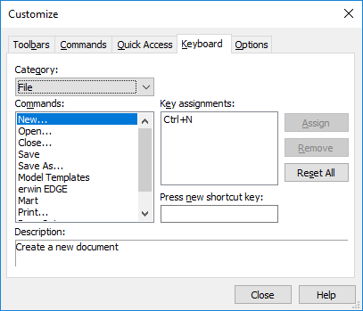

The keys that you press and hold are automatically populated and the Assign button is enabled.

This associates the new keys to the selected command and the Key assignments fields is updated.
erwin Data Modeler offers several predefined keyboard shortcuts for commonly performed tasks, such as creating a new model, saving a model, viewing the logical/physical model, and so on. Wherever applicable, the default keys are assigned based on the Microsoft Windows standards. For example, the shortcut key to create a new model (Ctrl + N) is same as the Windows shortcut for the File > New option or Home > New.
To view the existing shortcut keys:
The Customize dialog box opens.
A category-wise list of commands is displayed along with their default key assignments.

You can also customize the available shortcut keys. To do so, follow these steps:
The keys that you press and hold are automatically populated and the Assign button is enabled.
This associates the new keys to the selected command and the Key assignments fields is updated.